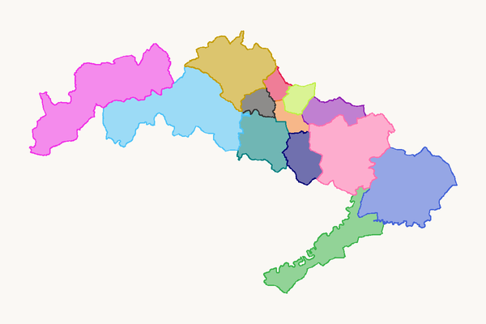
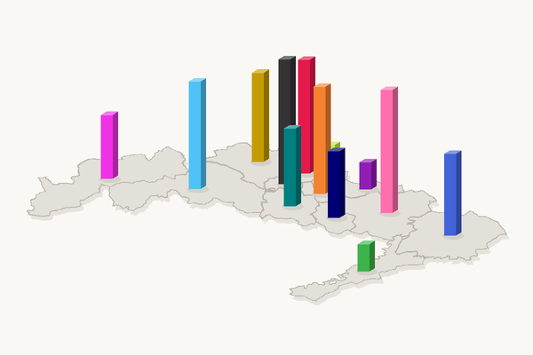
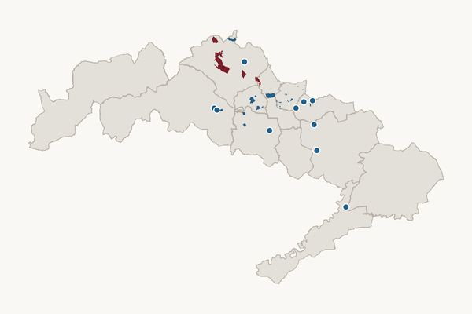
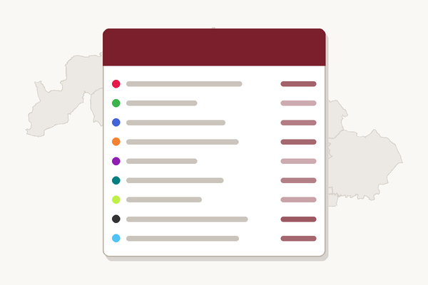
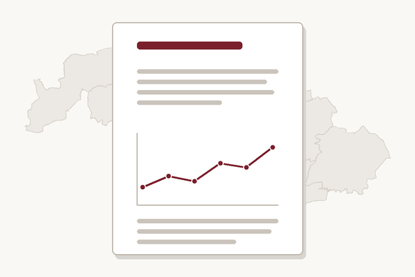

Presentación del proyecto: qué es este sitio, sus objetivos, cómo se ha elaborado y qué contiene cada sección.

Arciprestazgos y parroquias
Mapa de los 13 arciprestazgos y las 127 parroquias de la diócesis, con la ficha de cada parroquia: dirección, contacto, extensión y territorio.

Información demográfica
Información demográfica actual del territorio de la diócesis, por arciprestazgos, poblaciones y parroquias: habitantes, edades, origen, estudios y trabajo, hogares y renta.

Previsión de desarrollos urbanísticos
Desarrollos residenciales y promociones de vivienda previstos en el territorio de la diócesis, según fuentes oficiales y de prensa, con las parroquias en las que se sitúan.

Anuario
Datos de los sacramentos y de otros aspectos de la actividad de las parroquias, por parroquias y por arciprestazgos. En preparación.

Estudios
Reflexiones y estudios sobre temas concretos de la diócesis, que se irán publicando en esta sección. En preparación.